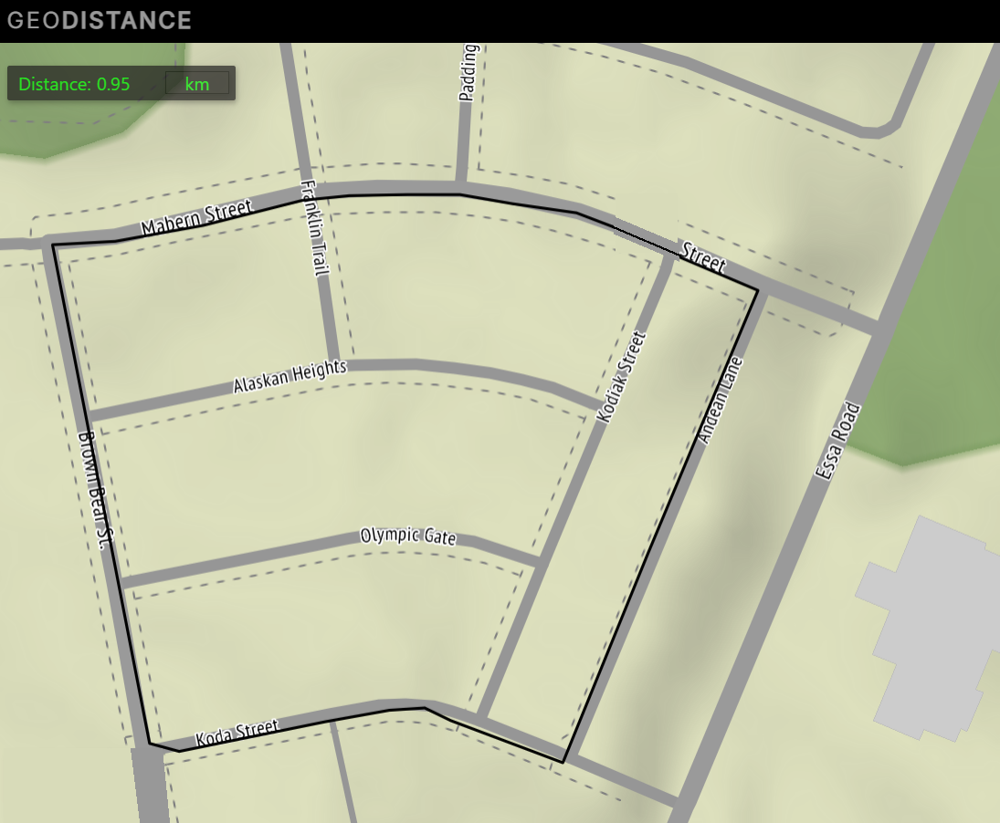

Athletics / Running I1 · interval log
Faster loops.
Same route.
Interval training for pace and VO₂ max on I1, a 0.95 km neighbourhood loop. 5 sessions logged since Sep 22.

Every logged session · Sep 22 → Oct 11, 2026. Descriptive, not a training plan.
01 / Every interval
Every session finished faster than it started.
● Sep 22● Sep 26● Sep 30● Oct 3● Oct 11Lower is faster.
Fade is last interval minus first; a negative fade means the session finished faster than it started.
02 / Session averages
4:13 to 3:37 in 5 sessions.
Recorded averages are kept as written. On Sep 26 the written average differs from the mean of the listed intervals by more than rounding.
No average was written for Oct 3; the computed mean stands alone there.
03 / The log
Every interval, as written.
| Date | Route | Intervals | Mean | Written average | Fastest | Spread | Fade | Pace /km |
|---|---|---|---|---|---|---|---|---|
| Sep 22 | I1 | 4:35.0 · 4:13.0 · 3:51.0 | 4:13 | 4:13 | 3:51 | 44 s | -44 s | 4:26 |
| Sep 26 | I1 | 4:10.0 · 3:48.0 · 3:47.0 · 3:56.0 | 3:55 | 3:56 | 3:47 | 23 s | -14 s | 4:08 |
| Sep 30 | I1 | 3:56.0 · 3:43.0 · 3:47.0 · 3:45.0 | 3:48 | 3:48 | 3:43 | 13 s | -11 s | 4:00 |
| Oct 3 | I1 | 3:42.0 · 3:40.0 · 3:42.0 · 3:39.0 | 3:41 | — (none written) | 3:39 | 3 s | -3 s | 3:52 |
| Oct 11 | I1 | 3:41.4 · 3:34.8 · 3:37.3 · 3:34.0 | 3:37 | 3:36.9 | 3:34 | 7.4 s | -7.4 s | 3:48 |
04 / Tempo runs
Continuous runs, 19.6 km so far.
- Oct 7 · House to Vape Store & Back · 4.6 km @ 5:08/km
- Oct 12 · Lora Bay Hill Run · 5.8 km @ 5:45/km
- Oct 24 · House to Vape Store & Back · 4.6 km @ 4:40/km
- Oct 26 · House to Vape Store & Back · 4.6 km @ 4:37/km
| Date | Route | Distance | Time | Pace | Speed | Pace as written |
|---|---|---|---|---|---|---|
| Oct 7 | House to Vape Store & Back | 4.6 km | 23:35.21 | 5:08 /km | 3.25 m/s | 5:07.65 min/km - 3.25m/s |
| Oct 12 | Lora Bay Hill Run | 5.8 km | 33.23.81 | 5:45 /km | 2.89 m/s | 5:45.5 min/km - 2.89m/s |
| Oct 24 | House to Vape Store & Back | 4.6 km | 21:27.96 | 4:40 /km | 3.57 m/s | 4:40.0 min/km - 3.57m/s |
| Oct 26 | House to Vape Store & Back | 4.6 km | 21:16.16 | 4:37 /km | 3.6 m/s | 4:37.4 min/km - 3.60m/s |
Pace and speed are computed from the written time and distance; the written pace line is kept beside them and matches. Route distances and names are as written; the route map stays unpublished because it shows the start point.
05 / Then and now
Best times from 2013 and 2017.
Rough estimates recalled from the major training blocks; earlier logs were lost. Track repeats and a neighbourhood loop are different efforts, so compare paces loosely.
| Year | Session | Best repeat | Pace |
|---|---|---|---|
| 2013 | 12 × 400 m | 1:08 | 2:50 /km |
| 2017 | 8 × 800 m | 2:42 | 3:23 /km |
| 2017 | 4 × 1600 m | 5:38 | 3:31 /km |
| 2026 | I1 loop (0.95 km) | 3:34 | 3:45 /km |
The evidence desk
How these numbers are made.
- Source: records/athletics/running/Interval_Data.txt, read line by line; any unreadable line stops the build.
- Pace assumes each interval is one 0.95 km loop of I1 (GeoDistance measurement shown on the route map).
- Means are computed from the listed intervals; written averages are shown beside them, never replaced.
Google Drive Logs Sync & Direct On-Site Editor · No Terminal Required
Refresh from Google Docs or add an entry directly from the site.
records/athletics/running/Interval_Data.txt)Currently built through 2026-10-11 · Uses 0 API tokens to validate, update charts & tables live, and commit to GitHub.➕ Option B — Paste or Type a New Entry Directly on the Site (0 Tokens · Updates Charts, Tables & GitHub)
Ready · Click "Check & Refresh Log Now" to pull from Google Docs, or open Option B above to paste a new entry directly on the site.
- Do it 100% from the site (Phone or Desktop): Either paste your Google Doc share link in Option A above and click ↻ Check & Refresh Log Now (0 Tokens), OR open ➕ Option B above, paste your new entry, and click ⚡ Append Entry, Update Charts & Publish from Site. Both immediately apply the 0-token regex formatter, redraw the interactive PowerBI charts, KPI cards, and tables on this page, relay across your devices, and commit to GitHub (when your GitHub PAT is saved in 🔐 Unlock Admin).
- Add a block per session: a line like
I1 - (10/6/2026) - 4 Intervals, then onem:ssorm:ss.stime per line, then optionallyAvg: m:ss. The interval count must match the times listed; the written average is kept beside the computed mean. - Tempo runs go in
records/athletics/running/Tempo_Run_Log.txt: a(10/12/2026)line, aTempo Run - 5.8km (Route Name)line, the total time like33:23.81, then the pace line like5:45.5 min/km - 2.89m/s. - Canonical repo file:
records/athletics/running/Interval_Data.txtin plain text (.txt) (also mirrored underLiamMs_PandasProjects/Gaming-and-Performance-Log/; both copies are updated together when you click ☁️ Commit & Publish Log to GitHub). - Optional local CLI sync: If you are in VS Code, you can also run
python -B -m site_content.log_sync ; python -B -m site_content.build --also-localand pushliammspandasprojects.
The latest entry, as written:
I1 - (10/11/2026) - 4 Intervals 3:41.4 3:34.8 3:37.3 3:34.0 Avg: 3:36.9
An older copy under LiamMs_PandasProjects/Gaming-and-Performance-Log/ is checked too: if it differs from the file above, the build stops instead of skipping the edit.